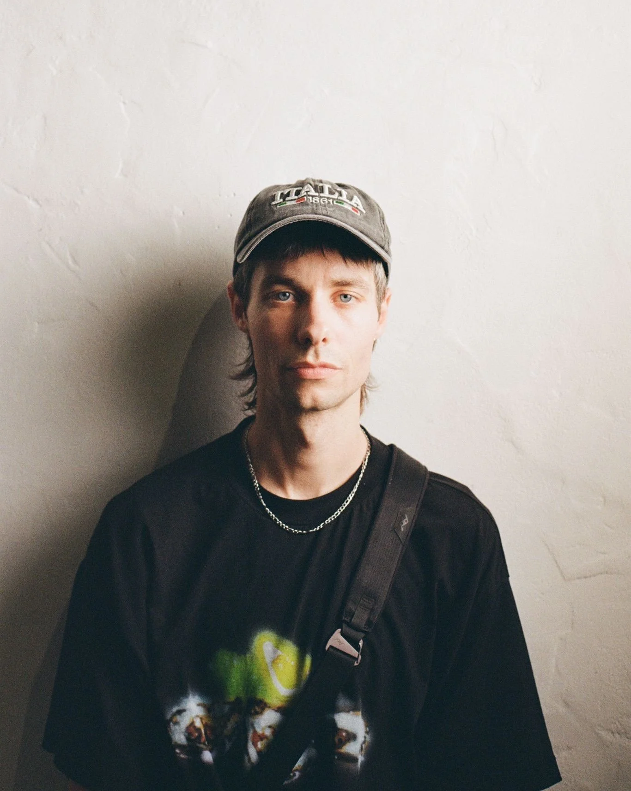

About
Jesse is a Sydney-based fashion and still-life photographer. His narrative-driven work conveys energy and emotion through the interplay of bold and muted colours and shapes.

Jesse is a Sydney-based fashion and still-life photographer. His narrative-driven work conveys energy and emotion through the interplay of bold and muted colours and shapes.